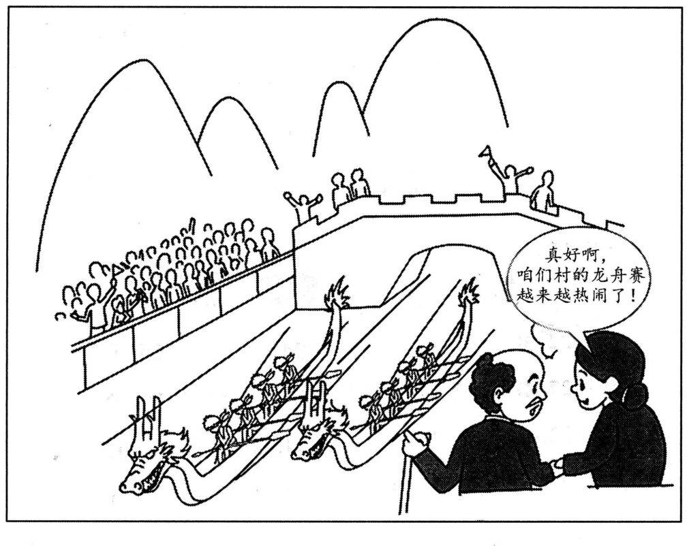

A小作文 · 替史密斯教授的「校园体育活动」课题写一则招募通知，招一名学生（10 分）
Write a notice to recruit a student for Prof. Smith’s research project on campus sports activities. Specify the duties and requirements of the job.
Write your answer in about 100 words on the ANSWER SHEET.
Do not use your own name in the notice; use “Li Ming” instead. (10 points)
💭 审题三件事
- ⭐⭐⭐ 先把课题名拆开：谁的 · 什么性质 · 研究什么。Prof. Smith’s（教授的 ⟹ 正式、可能要用英语和他沟通）· research project（科研 ⟹ 助理干的是科研的活）· on campus sports activities（研究对象是校园体育活动 ⟹ 要跑运动社团、找打球的同学）。⟹ 职责三件：发问卷 → 做访谈 → 整理数据，正好是一项调查从头到尾的顺序。
- ⭐⭐ 「要求」分三层写：身份 · 能力 · 态度。身份——在校生（recruit a student）；能力——会用 Excel（整理数据要用）、能跟人聊（访谈要用）；兴趣——对校园体育感兴趣，不是体育好（研究体育的人不必会打球）。每条要求都要能在职责里找到它的用处，这就是 specify。
- ⭐ 收尾四样：怎么报 · 报给谁 · 截止哪天 · 是谁发的。To apply, please email your CV to liming@univ.edu.cn by March 1. ＋ 落款 Li Ming 与一行身份——一个联系方式就够，别写电话、地址、办公室三样。
⭐⭐ 十七年 Part A：2023 是第一次「招一个人、做一份 job」
| 年份 | 体裁 | 读者是谁 | 第一句怎么起 | 落款 | 本年特有的坑 |
|---|---|---|---|---|---|
| 2007 | 建议信 | 校图书馆（机构） | I am writing to put forward several suggestions … | Li Ming | 建议只有口号没有可执行动作；写成投诉信 |
| 2008 | 道歉信 | 具名熟人 Bob | I am writing to apologize for … | Li Ming | 只道歉不给方案；方案没有「动作＋方式＋时间」 |
| 2009 | 致编辑信 | 报社编辑 | I am writing to express my concern about … | Li Ming | 建议里没有一条是编辑自己能办的 |
| 2010 | 通知 NOTICE （招募） | 一群人（无称呼） | Volunteers are needed for … | 机构名（题干给） | 写 Dear ＝ 体裁错；落款签 Li Ming |
| 2011 | 推荐信 · 荐物 | 未具名的一个朋友 | How have you been? I am writing to recommend … | Li Ming | 写成影评／剧透结局；通篇只有「我」没有「你」 |
| 2012 | 欢迎邮件 （以组织名义） | 一群国际学生 但仍是书信 | On behalf of the Students’ Union, I would like to extend a warm welcome to … | Li Ming ＋ Students’ Union | 按 2010 的手感写成通知；通篇 I 没有 we |
| 2013 | 邀请邮件 （担任角色） | 本校外教 | As chair of the English Club, I am writing to invite you to … | Li Ming | 只邀请、不交代工作量；没给答复期限 |
| 2014 | 建议信（撞 2007） | 本校校长 | As a third-year student, I am writing to suggest … | Li Ming | 建议写成对学生的劝告；用 should 下指令 |
| 2015 | 荐书邮件（撞 2011） | 读书会的一群会员 | As host of next Friday’s reading session, I would like to recommend … | Li Ming | 理由不对着读书会用途；剧透 |
| 2016 | 通知 NOTICE （告知 · 撞 2010） | 刚入学的国际学生（撞 2012） | Welcome to the University Library! To help all newly-enrolled international students … | Li Ming | 按 2012 写成欢迎信；信息写成广告 |
| 2017 | 推荐邮件 · 荐地方 （撞 2011／2015） | 具名的新到外籍教授 | Welcome to our city! Now that you have settled in, I would like to recommend … | Li Ming | 理由对谁都成立；推他家门口就有的；Dear James |
| 2018 | 邀请邮件 · 请出席 （撞 2013） | 全校国际专家（一群人） | On behalf of the Students’ Union, I am writing to invite you to this year’s graduation ceremony. | Li Ming | 时间地点写成「下个月」「在学校」；漏了为什么请您；称呼写成单数 |
| 2019 | 答复邮件 · 回复咨询 （十三年第一次） | 一位国际学生志愿者 | Thank you for your email about the “Aiding Rural Primary Schools” project. | Li Ming | 不回应来信就开讲；角色反了；忘了他是外国人 |
| 2020 | 通知 NOTICE · 活动 （撞 2010／2016） | 全体国际学生（上台的 ＋ 来听的） | To welcome the New Year, the Student Union will hold a singing contest for all international students … | Student Union （题干没给，自己推） | 手顺签了 Li Ming；只招选手忘了观众；没说唱什么语言 |
| 2021 | 建议邮件 · 给朋友本人 （撞 2007／2014） | 一个外国朋友（应届 · him/her 自起名） | Congratulations on your graduation! I am glad you are thinking of starting your career in China … | Li Ming | 建议对谁都成立、没用上「刚毕业」；写成「欢迎你来」的介绍 |
| 2022 | 邀请邮件 （带队参赛） | 英国大学的教授 | On behalf of …, I am writing to invite you to … | Li Ming | 漏时间/地点/事由 |
| 2023 本题 | ⭐⭐ 通知 NOTICE · 招募 （撞 2010，隔十三年） | 全校学生（无称呼）· 招的是一个人 | Prof. Smith’s research team is looking for one student assistant for its project on campus sports activities. | Li Ming ＋ 自补一行身份 | ⭐⭐⭐ 把「研究体育活动」读成「组织体育活动」（职责写成办比赛、当裁判）；⭐⭐ 要求写成「体育好」；职责、要求只写形容词不 specify；写 Dear；招成复数 volunteers |
- ⭐⭐ 通知四次、四种用途：2010 招募 · 2016 告知 · 2020 活动 · 2023 又回到招募——「押体裁没用」第十次验证：押中了「招募通知」，2010 那套 Volunteers are needed for … 照搬过来，复数就错了（题干是 a student），「无偿」也错了（题干是 the job）。
- ⭐⭐⭐ 教授第三次出现，第一次不是读者：2017 写给澳大利亚教授 · 2022 写给英国教授 · 2023 Prof. Smith 是雇主——读者是全校学生。⟹ 先问「这封东西是写给谁看的」：题干里出现的人，不一定就是读者。
- ⭐⭐ 2018 → 2019 → 2023：题干点名越来越直白——2018 you should include time, place and other relevant information（点名夹在 include 里）· 2019 specifying the details（只给类别）· 2023 Specify the duties and requirements of the job. 单独成句、两个名词。⟹ 题干点了名的，就是阅卷人手里的采分格：缺一项，内容分直接掉档。
- ⭐ 落款回到 Li Ming，但身份题干没给：2016 题干给了「你是图书馆员」、2020 给了「学生会派你」；2023 什么都没给 ⟹ 06 判据「以谁的名义」那一问：这件事需要资格（替教授招人）⟹ 补一个身份。
⭐⭐ 四则通知并排：2010 · 2016 · 2020 · 2023（本页新增）
体裁都是 notice、格式都不写 Dear——变量是这则通知要读者做什么：报名（2010、2023）· 知道（2016）· 来参加（2020）。
| 对照项 | 2010 · 招志愿者 | 2016 · 图书馆须知 | 2020 · 歌唱比赛 | 2023 · 招学生助理 |
|---|---|---|---|---|
| 题干动词 | a notice to recruit volunteers | a notice … providing … relevant information | assigned you to inform … | a notice to recruit a student |
| 要读者做什么 | 报名 | 知道、照着用 | 报名上台 ＋ 来听 | ⭐ 报名应聘（只要一个） |
| 题干点名的内容 | qualifications ＋ other information | relevant information（自己挑） | （只给了事件） | ⭐⭐⭐ duties ＋ requirements（两项，祈使句点名） |
| 有没有报酬 | 无（志愿者） | — | 奖项 | ⭐ the job ⟹ 有工时、有报酬（写一句） |
| 落款 | Postgraduates’ Association | Li Ming（图书馆员） | Student Union（自己推） | Li Ming ＋ 自补身份 |
| 第一句 | Volunteers are needed for … | Welcome to the University Library! … | To welcome the New Year, the Student Union will hold … | Prof. Smith’s research team is looking for one student assistant for its project on campus sports activities. |
| 收尾 | Those interested please send … by … | We hope you enjoy … | If you would rather listen, you are just as welcome. | To apply, please email your CV to … by March 1. |
⚠️ Directions 限定词清算表（开考先圈出来）
| 限定词 | 它约束什么 | 违反的后果 |
|---|---|---|
| Write a notice | ⭐ 非书信：标题 NOTICE、无称呼、无 Yours | Dear students, … Yours sincerely（体裁错） |
| to recruit | 目的是招人 ⟹ 末段必须有怎么报名、截止哪天 | 写成课题介绍，读完不知道去哪报 |
| a student | ⭐⭐ 一个人、一个岗位；申请人是学生 | Volunteers are needed …（照搬 2010 的复数）；招到校外去了 |
| for Prof. Smith’s | 以课题组的名义；⭐ 教授是雇主不是读者；Smith ⟹ 可能要用英语沟通 | 写成给教授的信；把教授写成 Mr. Smith |
| research project | ⭐⭐⭐ 助理干的是科研的活：问卷、访谈、数据 | 职责写成打杂（复印、打扫办公室）——写了也不错，但没有一条对着 research |
| on campus sports activities | ⭐⭐⭐ 研究对象：要去运动社团、球场找人；要求「对体育感兴趣」 | 读成「组织体育活动」：办比赛、当裁判；要求写成「身体好、会打球」 |
| Specify | ⭐⭐ 写具体：做哪几件事、每周几小时、会什么软件 | The work is meaningful. Applicants should be excellent.（没有 specify） |
| the duties and requirements | ⭐⭐⭐ 两项都要，顺序照题干：先职责、后要求 | 只写要求不写职责（最常见：通知写成了招聘条件清单） |
| of the job | ⭐ 是工作 ⟹ 工时、报酬一句 | 写成「志愿服务、锻炼自己」（不扣分，但浪费了 job 这个词） |
| in about 100 words | 95–115（标题、落款不计） | 职责要求各列五六条，写到 150 词 |
| use “Li Ming” instead | 落款 Li Ming；⭐ 身份自己补 | 签真名（判零风险）；凭 2020 的记忆落了别的；只落名字、报名的人不知道他是谁 |
🧩 筛子表：课题名里的四道筛子（本页新增）
2016–2018 筛子挂在读者身上，2019、2020 读者 ＋ 事件两边挂，2021 五道全挂在读者身上；2023 读者没有修饰语（就是「学生」），筛子全挂在课题名上：research · campus · sports · 学生做得了，外加题干的 job。过得越多越值钱，一道都不过的删掉。
| 候选内容 | 科研 | 校园 | 体育 | 学生能做 | job | 写不写 · 本文写成了哪一句 |
|---|---|---|---|---|---|---|
| ⭐⭐⭐ 职责：问卷 → 访谈 → 做图表 | ✅✅ | ✅ | ✅✅ | ✅ | — | Duties range from designing and handing out questionnaires to interviewing members of sports clubs and turning the answers into simple charts. |
| ⭐⭐ 工时 ＋ 报酬 | — | — | — | ✅（不耽误上课） | ✅✅ | The job takes about six hours a week from March to June, and it is paid. |
| ⭐⭐ 要求：在校生 ＋ 对校园体育感兴趣 ＋ 会 Excel | ✅（Excel） | ✅ | ✅ | ✅✅ | — | Applicants should be full-time students who are interested in campus sports and can use Excel. |
| ⭐⭐ 要求：会跟人聊 ＋ 一点英语 | ✅（访谈） | — | — | ✅ | — | Perhaps most importantly, you need to be good at talking with people, and some spoken English will help you work with Prof. Smith. |
| ⭐ 怎么报 | — | — | — | — | ✅ | To apply, please email your CV to liming@univ.edu.cn by March 1. |
| 有科研经历者优先 | ✅ | — | — | △ | — | 备选：要写就写「欢迎、不强求」——招本科生助理，把门槛抬到「必须有经历」会吓退大多数人（我的盲写稿写了 a plus but not a must，见 05+） |
| 复印资料、打扫实验室 | ✗ | — | — | ✅ | — | ❌ 当主职责：对任何课题、任何岗位都成立，四道筛子只过一道 |
| 组织运动会、当裁判、带大家锻炼 | ✗ | ✅ | ✅ | ✅ | — | ❌ 看着过了三道，最要紧的那道没过：课题是研究体育活动，不是办体育活动 |
| 要求「身体素质好、擅长某项运动」 | ✗ | — | △ | — | — | ❌ 研究体育不需要会打球；要求要在职责里找得到用处 |
- ⭐⭐ 「每周六小时、三月到六月、有报酬」都是编的——题干没给，考场上必须自己补（specify），而且要合理：学生助理一周几个小时、一个学期，❌ full-time, 40 hours a week（学生没法上课了）。报酬写「有」就够（it is paid），不写具体数——写错了数反而像招聘广告。
- ⭐⭐ 每条要求都对着一项职责：会 Excel ⟸ 做图表 · 会跟人聊 ⟸ 做访谈 · 一点英语 ⟸ 跟 Prof. Smith 沟通 · 对校园体育感兴趣 ⟸ 要跑运动社团。阅卷人读得出这条线，就知道你 specify 了。
- ⭐ 联系方式只给一个：邮箱 ＋ 截止日期。邮箱用 liming@… 正好又把落款的人名接上；❌ 电话、QQ、办公室地址全写（字数浪费、像小广告）。
- ⚠️ Prof. Smith 要不要说是外籍？题干只给了一个英文姓——别写 our foreign professor（没把握的事实不写），写 some spoken English will help you work with Prof. Smith：只说英语有用，不说他是哪国人。
✍️ 范文（ 词 · 🟡 亮点点击看讲解）
NOTICE
谁招 ＋ 招什么Prof. Smith’s research team is looking for one student assistant for its project on campus sports activities.
职责 ＋ 工时Duties range from designing and handing out questionnaires to interviewing members of sports clubs and turning the answers into simple charts. The job takes about six hours a week from March to June, and it is paid.
要求Applicants should be full-time students who are interested in campus sports and can use Excel. Perhaps most importantly, you need to be good at talking with people, and some spoken English will help you work with Prof. Smith.
报名To apply, please email your CV to liming@univ.edu.cn by March 1.
Li Ming
Prof. Smith’s Research Team
史密斯教授的研究团队招聘一名学生助理，参与其「校园体育活动」课题。
工作内容包括设计、发放调查问卷，访谈体育社团成员，以及把问卷结果整理成简单的图表。每周约六小时，时间为三月至六月，有报酬。
应聘者须为全日制在校学生，对校园体育感兴趣，会使用 Excel。也许最重要的是，你要善于与人交谈；能说一些英语，会方便你与史密斯教授共事。
应聘请于 3 月 1 日前将简历发送至 liming@univ.edu.cn。
李明
史密斯教授研究团队
- ⭐⭐⭐ 要点把「研究体育活动」写成「组织体育活动」：The assistant will help organize sports games and act as a referee … 课题是 research project on …——on 后面是研究对象。✅ 问卷、访谈、数据，三件都是调查的活。
- ⭐⭐⭐ 要点漏了一项：只写 requirements（招聘条件清单）或只写 duties。题干用祈使句点了两个名词，缺一项就是缺一个采分格。
- ⭐⭐ 要点两项都写了，但都没 specify：The work is interesting. Applicants should be hard-working and excellent. ✅ 做哪几件事 · 每周几小时 · 会什么软件，写到能核对。
- ⭐⭐ 要点要求与职责对不上：要求「擅长篮球、身体好」——研究体育不需要会打球。✅ 每条要求都能在职责里找到用处。
- ⭐ 体裁按书信写：Dear students, … Yours sincerely, Li Ming。✅ 标题 NOTICE 居中，正文直入事由。
- ⭐ 数量招成复数：Volunteers / Several students are needed …（2010 的手感）。✅ 题干是 a student ⟹ one student assistant。
- ⭐ 落款只落 Li Ming、没有身份；或签真名。✅ Li Ming ＋ 一行身份（Prof. Smith’s Research Team）；真名任何地方都不出现。
- 语言❌ recruit a student to Prof. Smith · ❌ a research about sports · ❌ be responsible to collect data · ❌ have interest on sports · ❌ please send your resume before March 1st to ⟹ ✅ recruit a student for · a research project on · be responsible for collecting · be interested in · email your CV to … by March 1。
- 字数about 100 words：95–115 最稳。本文 词（不含标题与落款）。
- ⭐⭐ 第一句四样：谁招 · 招几个 · 招什么 · 为什么课题：Prof. Smith’s research team is looking for one student assistant for its project on campus sports activities.——one 对上 a student，its project on … 把题干的课题名原样接住；be looking for 比 recruit 口语一点，通知里两者都行。
- ⭐⭐⭐ range from A to B 一句列完三件事：Duties range from designing and handing out questionnaires to interviewing members of sports clubs and turning the answers into simple charts.——句架借同卷新题型（见 05）；三件事正好是一项调查的先后顺序，读的人一眼看出这份工作从头干到尾是什么样。
- ⭐ 工时与报酬一句话：The job takes about six hours a week from March to June, and it is paid.——take ＋ 时长；it is paid（有报酬）对上题干的 job，不写具体金额。
- ⭐⭐ 要求从身份写到能力：Applicants should be full-time students who are interested in campus sports and can use Excel.——full-time students 对上 recruit a student；interested in（感兴趣）不是 good at（擅长）。
- ⭐⭐ Perhaps most importantly 递进：Perhaps most importantly, you need to be good at talking with people,——借同卷新题型的收束词；perhaps 给了分寸，most importantly 把「访谈要用的能力」排到最前；从 Applicants 换成 you，通知末尾直接对读者说话。
- ⭐ 英语只说用处：some spoken English will help you work with Prof. Smith.——help sb do；没说「教授是外国人」，题干没给的事实不替它说。
- ⭐ 收尾不定式起句：To apply, please email your CV to … by March 1.——To apply（2020 的 To sign up 同型）· email 作动词 · by ＋ 日期 ＝ 截止。
- 落款右对齐两行：Li Ming ／ Prof. Smith’s Research Team；通知不写 Yours，日期可写可不写（本文把日期放进截止时间里）。
B大作文 · 图画作文（20 分）
Write an essay based on the picture below. In your essay, you should
1) describe the picture briefly,
2) interpret the implied meaning, and
3) give your comments.
Write your answer in 160–200 words on the ANSWER SHEET. (20 points)

- 单幅；Directions 仍是 the picture below（单数，同 2018、2019、2021、2022）。
- 背景：几座山 ⟹ 山里的村子；一条河。
- 中景：两条龙头船正从一座带垛口的老石桥的桥洞下冲出来，船上一排桨手头扎带子；左岸栏杆后挤满了观众，有人举手欢呼；桥上也站着人，在挥手、吹号。
- 前景右下：一位扎马尾的女子拉着一位拄拐杖、留小胡子的老人的手，笑着说话；老人侧过脸看着她。对话框的尾巴指着女子：「真好啊，咱们村的龙舟赛越来越热闹了！」
- ⭐⭐⭐ 没有图注——十七年里第五次（2007 连字都没有 · 2012 · 2021 · 2022 只有海报上的「校园讲座」· 2023），而且 2021–2023 连续三年。⟹ 论点只能从这一句话里抽。
- ⭐⭐ 只有一个人开口：2012、2021、2022 都是两句对白，2023 第一次是一句话、一个听众 ⟹ 没有「两句对比」可做，要把一句话拆成几个成分来读。
- ⚠️ 图上没有的东西别补：没有游客、没有摄像机、没有横幅标语（看不出是不是外地人来看）；没有画出为什么越来越热闹（路修好了、年轻人回乡了，都是你加的）；女子和老人是什么关系也没说。
💭 审题：一句话拆五个成分，找出画面上有证据的那两个
- 先看到题材：龙舟 ＋ 村子 ⟹ 传统文化、乡村振兴、文化自信。这一步人人都能看到——可它只给了话题，没给论点。回到那句话：她没说「传统文化」，没说「振兴」，她说的是「越来越热闹」。
- ⭐⭐⭐ 再把这句话拆开：真好啊（评价）· 咱们村的（归属）· 龙舟赛（对象）· 越来越（趋势）· 热闹（拿什么量）。再逐个回画面找证据：「热闹」的证据最多——两岸、桥上全是人；「越来越」需要一个过去——她偏偏是说给一位拄拐杖的老人听的。⟹ 第二段就写这两个成分：这是一个趋势，而它是用人来量的。
- ⭐⭐ 再想「热闹」为什么能当尺子。龙舟赛一个人办不了：一条船几十个桨手，岸上要一村子的人喊——它本来就是一件「人多才成立」的事。⟹ 人越来越多，就是这项习俗还活着的最直接的证据。（对照 2021：个人的兴趣不看人数；集体的节庆就是人数。）
- 「真好啊，咱们村的龙舟赛越来越热闹了！」✅ “How wonderful! Our village’s dragon boat race is getting livelier and livelier!” ／ “It’s great! The dragon boat race in our village is getting more and more lively!”
- ⚠️ 「热闹」≠ hot / noisy：热闹是人多、气氛好 ⟹ lively ／ busy ／ draws bigger crowds。❌ more and more hot（字对字）· ❌ noisier and noisier（成了抱怨）
- ⚠️ 「越来越」⟹ 比较级 and 比较级：livelier and livelier ／ more and more lively；❌ more and more livelier（双重比较）· ❌ is lively more and more。
- ⚠️ 「咱们村」⟹ our village：「咱们」包括听话人——女子和老人同是这个村的人；❌ my village（把老人排除在外了）· ❌ we village。「龙舟赛」⟹ dragon boat race，❌ dragon ship match。
- 没有图注 ⟹ 第一句别编标题：❌ The picture, entitled “Tradition Revives”, shows …。✅ The picture shows … 直接起。
📐 描图段三看（本图版 · 单幅、一人开口一人听、无图注）
| 看什么 | 本图看出来的 | 写进文章的哪一句 |
|---|---|---|
| ① 看图上的字 | 一句话（对话框尾巴指着女子）；没有图注 | “How wonderful! Our village’s dragon boat race is getting livelier and livelier!” |
| ② 看最醒目处 | ⭐⭐ 人：左岸挤满、桥上也站着人——「热闹」是画出来的 | Two dragon boats speed out from under an old stone bridge as crowds cheer on the bank. |
| ③ 看说话的两个人 | ⭐ 女子笑着、拉着老人的手；老人拄着拐杖——一老一少，她把好消息说给长辈听 | Holding the hand of an old man with a cane, a woman says with a smile, … |
⭐⭐⭐ 一句话拆五个成分：「越来越」和「热闹」画面上有证据（本页新增）
2017–2021 都是两句话，打法是逐词对；2023 只有一句——打法换成逐个成分回画面找证据：画面替哪个成分作了证，哪个成分就是题眼。
| 成分 | 原话 | 画面里的证据 | 写进文章的哪一句 |
|---|---|---|---|
| 评价 | 真好啊 | 女子在笑 | How wonderful! · says with a smile |
| ⭐⭐ 归属 | 咱们村的 | 「咱们」包括听话的老人：两人同是村里人；比赛是村子自己的，不是外来的表演 | “Our” tells us whose race it is. |
| 对象 | 龙舟赛 | 两条龙头船、一排桨手 | a dragon boat race in a mountain village |
| ⭐⭐⭐ 趋势 | 越来越 | 要有一个「过去」才比得出来——听她说话的是一位拄拐杖的老人 | “Livelier and livelier” points to a trend: the custom is growing, not fading, and she says so to an old man who knows the past. |
| ⭐⭐⭐ 拿什么量 | 热闹 | 左岸挤满、桥上站满——热闹就是人 | A dragon boat race is counted in people: it needs dozens of rowers and a whole village on the bank. |
| 没说出口的 | 为什么越来越热闹（图上没画原因）· 来看的是谁（看不出有没有游客） | ⚠️ 这两样别替她说：原因只能放第三段、用 may；游客只能作为让步的一种可能 | |
- ⭐⭐ 一个给方向，一个给尺子：「越来越」说往哪边走（在变好，不是在衰落），「热闹」说拿什么量（人）。两个合起来就是第二段的骨架：这项习俗在长，而且长在人数上。
- ⭐⭐ 画面只给这两个成分作了证：评价、对象人人都会写；「咱们」要靠语感；「热闹」画得满满当当，「越来越」安排了一位老人来听——画家花了笔墨的地方，就是要你写的地方。
- ⭐ 从「两句话逐词对」到「一句话拆成分」：2017 两句结构相同 · 2018 两张清单 · 2019 一答一劝 · 2020 两条规矩 · 2021 一问一答 · 2023 只剩一句——动作换了，原则没换：每个成分都回画面核一遍。
🧩 图上字的语法结构，决定文章的论证结构（十五型扩到十六型：新增「一句感叹 ＋ 趋势判断，一人开口、说给长辈听，无图注」）
| 年份 | 图上的字是什么结构 | 文章就得怎么搭 |
|---|---|---|
| 2007 | 无字，只有两个想象气泡 | 靠对比两个气泡立意 |
| 2008 | 因果句：你一条腿，我一条腿；你我一起，走南闯北 | 顺着因果推。单线论证 |
| 2009 | 对举短语（同一主语 ＋ 两个形容词）：网络的“近”与“远” | 两边都写，还要回答为什么同一个东西既近又远 |
| 2010 | 比喻式判断句：文化“火锅”：既美味又营养 | 先解喻，再分别落实两个并列谓语 |
| 2011 | 引号双关式短语：旅程之“余” | 破字 → 对照句 → 指认施动者 |
| 2012 | 两句对白（无图注）：全完了！／幸好还剩点儿。 | 转述 → 拿画面核对真假 → 看手 |
| 2013 | 一词图注 ＋ 并列标签：选择 ／ 求职·考研·出国·创业 | 全译 → 不排座次 → 追问谁来选 |
| 2014 | 两格时间标签 ＋ 一词图注：三十年前…… ／ 现在…… ／ 相携 | 两格同构描 → 列变与不变 → 在两格之间解图注 |
| 2015 | 偏正短语：手机时代的聚会 | 写中心语，拆开看哪一半还在，矛头别指定语 |
| 2016 | 取舍复句：与其只提要求，不如做个榜样 | 两分句各配一格 → 第二段写机制 → 第三段解限定副词「只」 |
| 2017 | 一字之差的动宾对举：“有书”与“读书” | 两个短语各配一格 → 盯住被换掉的动词 → 末段把两个动词收拢 |
| 2018 | 进行时图注 ＋ 两张三条的清单：选课进行时 ／ 知识新·重创新·有难度…… ／ 给分高·易通过·作业少…… | 两张清单全译 → 摆到同一把尺子上找唯一交锋项 → 第三段对着「进行时」说话 |
| 2019 | 一答一劝的对白 ＋ 两字时段图注：累了，我不爬了。／别呀！休息一下再接着爬。／途中 | 两句全译 → 看第二句让了什么步、不让的是哪一个字 → 第三段对着「途中」说话 |
| 2020 | 两格各一句条件紧缩句 ＋ 一词抽象名词图注：尽早完成才放心 ／ 不到最后不动手 ／ 习惯 | 两句全译、条件别丢 → 先拆出同一个骨架，再看骨架里换掉的词 → 第三段对着图注写「每一次」 |
| 2021 | 一句转述他人看法 ＋ 一句反问加判断的回答（无图注）：爸爸，很多同学觉得学唱戏不好玩。／你自己不是喜欢吗？那就足够了。 | 两句全译、反问别译成真疑问 → 逐词对齐找出被换掉的成分（评判者）→ 图上的结论只解释不复述 |
| 2022 | 两句并排对白 ＋ 海报标题（无图注）：不是我们专业的，听了也没多大用。／去听听肯定有好处。（与 2012 同型，不另计） | 转述两句对话并选边站 |
| 2023 本题 | 一句感叹 ＋ 趋势判断（一人开口、说给长辈听，无图注）：真好啊，咱们村的龙舟赛越来越热闹了！ | ⭐ 三步走：① 整句译出（热闹 ≠ hot，越来越 ＝ 比较级叠用，咱们 ＝ our）；② ⭐⭐⭐ 拆成分、回画面找证据（热闹 ← 人群，越来越 ← 听话的老人）；③ ⭐⭐ 第二段写「趋势 ＋ 尺子」，原因图上没画 ⟹ 留到第三段、用 may |
- ⭐⭐⭐ 2021 ↔ 2023：传统文化做布景，两年都在「数人头」——结论一负一正。2021 孩子数「很多同学」，父亲说人数不算数（你喜欢就够了）；2023 女子数的是岸上的人，人数就是好消息。⟹ 不矛盾：个人的兴趣不靠人数撑，集体的节庆就是人数本身——一条船、一村人，少了人，龙舟赛就不成其为龙舟赛。⚠️ 两年连考传统文化，2021 的陷阱是「换了理由」，2023 的陷阱是「读反了方向」（见下面现成联想）。
- ⭐⭐ 2012 · 2021 · 2022 · 2023：没有图注的四年，而且 2021–2023 连续三年（2019「途中」、2020「习惯」之后图注就没再出现）。⟹ 押「图注题」不如练「从对白里抽论点」；2023 更进一步，连第二句对白都没有了。
- ⭐⭐ 2014 ↔ 2023：一老一少拉着手——2014 女儿挽着母亲（图注「相携」，主题就是两代人）；2023 老人只是听众，主题是龙舟赛。⟹ 别按 2014 的手感写「尊老爱幼」；老人在这幅图里的用处是替「越来越」作证：他记得从前。
| 年份 | 现成联想 | 回画面查一遍 | 结论 |
|---|---|---|---|
| 2009 | 蛛网 ⟹ 陷阱 | 图里没有蜘蛛 | ❌ 联想错 |
| 2010 | 火锅 ⟹ 熔炉 | 每块料都还保留形状和名字 | ❌ 联想错 |
| 2011 | 河脏 ⟹ 工厂排污 | 图上没有工厂 | ❌ 联想错 |
| 2012 | 半杯水 ⟹ 乐观 vs 悲观 | 瓶里确实还剩、两人确实相反 | ✅ 成立，但少了那只手 |
| 2013 | 岔路口 ⟹ 选对那条路 | 四条路没被标出对错 | ⚠️ 半成立：隐含前提找不到 |
| 2014 | 子女扶老人 ⟹ 反哺／报恩 | 母亲在自己走、在笑 | ⚠️ 半成立：程度过了量 |
| 2015 | 低头族 ⟹ 手机有害 | 没有一个人痛苦，两个在笑 | ⚠️ 半成立：打错了靶 |
| 2016 | 「身教胜于言传 ⟹ 父母别说教」 | 右格要求还在，图注写的是「只」 | ✅ 成立，但删掉了「只」 |
| 2017 | 书架 ＋ 读书 ⟹ 「读书重质不重量」 | 右格报的正是一个数量目标 | ⚠️ 半成立：误伤正面格 |
| 2018 | 选课 ⟹ 「大学生功利，专挑水课」 | 图注是进行时，他还没选 | ⚠️ 半成立：抢了结局 |
| 2019 | 登山 ＋ 鼓励 ⟹ 「坚持就是胜利，不能半途而废」 | 劝人的那位自己先说「休息一下」；说不爬的人还坐在原地 | ⚠️ 半成立，一次踩两个旧坑（删字 ＋ 抢结局） |
| 2020 | 勤快 vs 拖延 ⟹ 「拖延症害人，今日事今日毕」 | 图注「习惯」管两格；「拖延」只说得了右格；图上没有结局 | ⚠️ 成立，但缩小了图注 |
| 2021 | 孙悟空 ＋ 唱戏 ⟹ 「弘扬传统文化，传承国粹」 | 父亲给的理由是「你自己喜欢」，不是「这是国粹」 | ⚠️ 布景成立，理由被换掉 |
| 2023 本题 | 龙舟 ＋ 村子 ⟹ 「传统节日日渐冷清，亟需保护」 | ① 她说的是「越来越热闹」；② 两岸、桥上挤满了人，画面上没有一处冷清；③ 她是笑着说的 | ⚠️⚠️ 第九种结果：把趋势读反了——话题对、方向反：图说「在长」，模板说「在衰」 |
- ⭐⭐ 十四年里第九种结果：把趋势读反了。前八种都是「联想与图差一点」（少一只手、删一个字、换一个理由）；2023 是差一个方向——一句 Nowadays traditional festivals are being forgotten 起头，后面写得再好，第一句就和图上那句「越来越热闹」唱反调。⟹ 2021 刚考过「传统文化」，背了「后继乏人」那套的人，2023 最容易踩。
- ⭐⭐ 另一个现成联想「乡村振兴、生活好了」——补了图上没画的原因：越来越热闹可能是因为路修通了、年轻人回乡了、村里有钱了，但图上一样都没画。⟹ 可以写，只能放第三段、只能用 may／one likely reason（见一图三写 C）；当成第二段的寓意就是把猜测写成了图意（我的盲写稿就这么写了，见 05+）。
- ⭐ 「文化自信」「民族精神」：方向对，但太大——一个村子的一场比赛，扛不动「民族」两个字；先把「咱们村」写透，再往外推一步就够了。
✍️ 范文（ 词 · 🟡 亮点点击看讲解）
①描图The picture shows a dragon boat race in a mountain village. Two dragon boats speed out from under an old stone bridge as crowds cheer on the bank. Holding the hand of an old man with a cane, a woman says with a smile, “How wonderful! Our village’s dragon boat race is getting livelier and livelier!”
②寓意Her remark turns on two words. “Livelier and livelier” points to a trend: the custom is growing, not fading, and she says so to an old man who knows the past. “Our” tells us whose race it is. A dragon boat race is counted in people: it needs dozens of rowers and a whole village on the bank. The growing crowd is the surest sign that the tradition is alive.
③评论To be fair, some revivals end up as shows for tourists. Yet customs survive less because they are protected than because they are used. Many old inns on the Silk Road lie in ruins because caravans no longer stop there, while a village race lives on as long as it serves as a meeting point for young and old. For a tradition to last, it needs to remain the villagers’ own.
她这句话落在两个词上。「越来越热闹」说的是一个趋势：这项习俗在长，而不是在衰——她把这话说给一位记得从前的老人听。「咱们」告诉我们这是谁的比赛。龙舟赛是用人来量的：船上要几十个桨手，岸上要一整个村子。人越来越多，就是这项传统还活着最确凿的证据。
说句公道话，有些「复兴」最后成了演给游客看的节目。但习俗能活下来，与其说是因为被保护，不如说是因为被使用。丝绸之路上的许多老客栈如今成了废墟，因为再没有商队在那里歇脚；而村里的龙舟赛，只要还是老老少少碰头的地方，就会一直活下去。一项传统要想长久，就得一直是村里人自己的。
🔁 一图三写：同一幅图，第三段的三个版本
前两段一个字不动，只换第三段——按 Directions 第 3 条的动词选版本。点一下卡片可以高亮对照。
- ⭐⭐⭐ 立意把趋势读反：Nowadays, traditional festivals are losing their appeal, and we must protect them … 她说的是「越来越热闹」，画面上挤满了人——第一句就和图唱反调。
- ⭐⭐ 立意把原因当寓意：The picture shows that with the development of rural areas, villagers are richer … 原因图上没画：可以写，只能放第三段、用 may。
- ⭐⭐ 立意第二段只复述「很热闹、大家很开心」：The race is very lively and everyone is happy. 「越来越」和「咱们」两个成分都没解释——描图段的话换了个说法又说一遍。
- ⭐ 立意写成「尊老爱幼」（2014 手感）：The young woman takes good care of the old man … 老人是听众，不是主角。
- ⭐ 立意写成「团队合作」：Dragon boat racing teaches us teamwork … 图上热闹的是岸上的人，不是船上的配合；这一层最多当第三段的半句。
- ⭐ 描图编图注：The picture, entitled “Tradition Revives” … 2023 没有图注；也别把「热闹」译成 hot / noisy。
- 语言❌ more and more livelier ⟹ ✅ livelier and livelier ／ more and more lively · ❌ dragon ship match ⟹ ✅ dragon boat race · ❌ my village（她说的是「咱们」） ⟹ ✅ our village · ❌ inherit the tradition ⟹ ✅ keep the tradition alive ／ pass it on · ❌ the traditional culture is the root of our nation（套话，不回图）。
- 字数160–200：185–198 最稳。本文 词。我的盲写稿 199（见 05+）——没超，但擦线，描图段 61 词偏长。
- ⭐ 没有图注就别编：The picture shows a dragon boat race in a mountain village.——mountain village 把背景的山和「村」一次写完；单幅图用单数 picture。
- ⭐⭐ 描图先写人群：Two dragon boats speed out from under an old stone bridge as crowds cheer on the bank.——from under（从……下面）双介词；as 引同时发生；crowds cheer 是「热闹」的证据，第二段要用它，第一段就得先摆出来。
- ⭐ 分词状语写两个人：Holding the hand of an old man with a cane, a woman says with a smile,——with a cane 一个介词短语写出「老」，为第二段「记得从前」埋线。
- ⭐⭐ 引语整句译、比较级叠用：“How wonderful! Our village’s dragon boat race is getting livelier and livelier!”——get ＋ 比较级 and 比较级 ＝ 越来越；our 对上「咱们」。
- ⭐⭐ 第二段第一句先点出「两个词」：Her remark turns on two words.——turn on（取决于、以……为关键）；阅卷人一读就知道下面要拆字，不会把它当成复述。
- ⭐⭐⭐ 趋势 ＋ 证人：“Livelier and livelier” points to a trend: the custom is growing, not fading, and she says so to an old man who knows the past.——A, not B 正面堵住「传统衰落」那个现成联想；who knows the past 解释了画家为什么让她对一位老人说。
- ⭐ 「咱们」一句带过：“Our” tells us whose race it is.——短句，第三段末句再收回来（the villagers’ own），前后呼应。
- ⭐⭐⭐ 「热闹」是尺子：A dragon boat race is counted in people: it needs dozens of rowers and a whole village on the bank.——be counted in（以……计）；冒号后给理由：船上的人 ＋ 岸上的人，两头都要。
- ⭐ 第二段收在结论：The growing crowd is the surest sign that the tradition is alive.——the surest sign that ＋ 同位语从句；growing 呼应「越来越」，crowd 呼应「热闹」。
- ⭐ To be fair 先让一步：To be fair, some revivals end up as shows for tourists.——end up as（最后成了）；some 守住分寸，不说「很多」（2021 页的纪律：别写没有出处的全称）。
- ⭐⭐ less because A than because B：Yet customs survive less because they are protected than because they are used.——2021 范文 less by duty than by people 的同一骨架，这次比的是两个原因从句。
- ⭐⭐ 借完形，一反一正：Many old inns on the Silk Road lie in ruins because caravans no longer stop there, while a village race lives on as long as it serves as a meeting point for young and old.——lie in ruins、serve as a meeting point for 都从同卷完形来（见 05）；while 对照，as long as 给条件。
- ⭐ 末句收回「咱们」：For a tradition to last, it needs to remain the villagers’ own.——For sth to do, … needs to … 借同卷翻译的句架；one’s own（自己的）对上第二段的 “Our”。
03🩺 跑题诊断表（这幅图最容易滑向的五个方向）
龙舟、村子、老人——三样东西各连着一套背熟的话（传统文化、乡村振兴、尊老爱幼）。越熟越容易整段倒出来，却没对着她那句「越来越热闹」。下面五条按「有多容易滑过去」排序，①②③是本图特有的：①读反了方向，②把猜测当图意，③只复述了热闹。
| 跑向 | 长什么样 | 为什么错 | 回到正轨的那一句 |
|---|---|---|---|
| ① 写成「传统节日日渐冷清」 本图特有 | Nowadays, traditional festivals are being forgotten by young people, so we must take action to protect them … | ⚠️⚠️ 方向读反：她说「越来越热闹」，画面上挤满了人——第一句就和图唱反调 | the custom is growing, not fading, |
| ② 把「乡村振兴」当寓意 本图特有 | The picture shows that with rural revitalization, villagers have become richer and can afford such events … | ⚠️⚠️ 原因图上没画：路、钱、回乡的年轻人一样都没有——把自己的猜测写成了画家的意思 | A dragon boat race is counted in people: it needs dozens of rowers and a whole village on the bank. |
| ③ 第二段只说「很热闹、很开心」 本图特有 | The race is very exciting, and everyone enjoys it very much … | 复述不是解释：「越来越」（趋势）和「咱们」（归属）两个成分都没碰 | Her remark turns on two words. |
| ④ 写成「尊老爱幼」 | The young woman takes good care of the old man, which shows respect for the elderly … | 换了主角（2014 手感）：老人是听众，图的主题是龙舟赛 | and she says so to an old man who knows the past. |
| ⑤ 写成「团队合作」 | Dragon boat racing teaches us that teamwork is the key to success … | 看错了热闹的地方：画面上满的是岸上的人，不是船上的配合；龙舟能写团队，但这幅图没让你写 | The growing crowd is the surest sign that the tradition is alive. |
04🌏 图上的字怎么译 ＋ 传统习俗／乡村话题词块
本图最容易写成中式英语的是「热闹」「越来越」「咱们村」「龙舟赛」四处——一个 more and more hot，阅卷人一眼就能看出是在字对字。
| 中文 | ✅ 这样写 | ⚠️ 别这样写 |
|---|---|---|
| ⭐⭐ 热闹 | lively ／ busy ／ draw bigger crowds | hot · noisy（成了抱怨）· hot and noisy |
| ⭐⭐ 越来越热闹 | getting livelier and livelier ／ more and more lively | more and more livelier · lively more and more |
| ⭐⭐ 咱们村的 | our village’s ／ in our village | my village（把听话的人排除了）· we village |
| ⭐ 龙舟赛 · 龙头 · 桨手 | dragon boat race · dragon head · rowers | dragon ship match · boat players |
| ⭐ 真好啊 | How wonderful! ／ It’s great! | Really good ah! |
| ⭐ 端午节 | the Dragon Boat Festival | the Duanwu Day（可以写拼音，但要加解释） |
| 拄拐杖的老人 | an old man with a cane ／ leaning on a walking stick | an old man holding a stick（像要打人） |
| 复兴 · 重焕生机 | revival · come back to life · be revived | reborn again · recover its youth |
| 传承 | keep … alive ／ pass on | inherit（继承遗产，宾语是财产） |
| 变成表演 | end up as a show for tourists ／ be staged for visitors | become a performance to show tourists |
| 乡村振兴 | rural revitalization（只在第三段、只当可能的原因） | countryside rejuvenation · village revival plan |
🧺 传统习俗／乡村话题词块（可迁移到「传统节日」「非遗」「乡村变化」「社区生活」类题目）
05素材联动 · 2023 本年七篇能喂这篇作文
⚠️ 翻译与大作文连续第十二年不撞题（翻译讲人工智能与数字营销），但完形正好是它的反面教材：丝路上的商旅客栈——曾经是人来人往的碰头处，商队不来了，就成了废墟；龙舟赛人越来越多，就越来越活。⚠️ 同卷原文只引短语（每处不超过 13 词）；下面「可套」的英文全部是自拟的，只借句架。所引短语均已回本站 2023 各页核对。
05+🧪 盲写稿 vs 范文
写作没有标准答案可对，但可以拿本页自己列的坑去查自己的盲写稿。盲写稿先落盘（只看过原卷第 14 页，没看任何解析——本年精讲也确实没有范文），原文存 _讲义笔记/2023_作文_mine.txt；词数按本页脚本同一口径数。
| 项目 | 盲写稿 | 范文 | 结论 |
|---|---|---|---|
| A 标题 · 落款 | Notice … Li Ming | NOTICE（居中）… Li Ming ／ Prof. Smith’s Research Team | ⚠️ 体裁对了（没写 Dear）；落款只有名字——报名的人不知道 Li Ming 是谁，题干没给身份就自己补一行 |
| A 首句 | Prof. Smith’s research team is looking for a student assistant for a project on campus sports activities. | Prof. Smith’s research team is looking for one student assistant for its project on campus sports activities. | ✅ 结构一样，范文沿用；a → one（把「只招一个」说死），a project → its project |
| A 职责 | The assistant will help design and hand out questionnaires, interview students who take part in sports clubs, and sort the data into simple charts. | Duties range from designing and handing out questionnaires to interviewing members of sports clubs and turning the answers into simple charts. | ✅ 三件都是调查的活，盲写时就对着 research，没滑到「组织体育活动」；范文改用新题型的 range from … to，一句更紧 |
| A 工时 · 报酬 | The work takes about six hours a week from March to June, and a monthly payment will be offered. | The job takes about six hours a week from March to June, and it is paid. | ✅ 盲写时就有；范文改 The job 对上题干原词，报酬压成三个词 |
| A 要求 | Applicants should be full-time students who are interested in sports and have basic skills in Excel. Good communication skills and a responsible attitude are also required. Experience in research is a plus but not a must. | Applicants should be full-time students who are interested in campus sports and can use Excel. Perhaps most importantly, you need to be good at talking with people, and some spoken English will help you work with Prof. Smith. | ⚠️ a responsible attitude 对谁都成立（四道筛子一道不过）；Good communication skills 是对的，但没说它为什么要紧（访谈）；没想到 Prof. Smith 这个名字——英语那一条漏了 |
| A 报名 | If you are interested, please send your resume to lim@univ.edu.cn before February 28. | To apply, please email your CV to liming@univ.edu.cn by March 1. | ✅ 一个联系方式 ＋ 截止日期；by（截止）比 before 更像通知用语 |
| A 词数 | 109 | 本页自动统计（见 A 节） | ✅ 在 95–115 之内 |
| B 描图 | The picture shows a lively dragon boat race in a village. … Holding the hand of an old man, a woman smiles and says, “How nice! The dragon boat race in our village is getting more and more lively!” | The picture shows a dragon boat race in a mountain village. … Holding the hand of an old man with a cane, … | ✅ 人群、两人、整句引语都有，没编图注；⚠️ 第一句就用了 lively——引语里再说 more and more lively，「热闹」先被描图段用掉了；范文把它留给引语和第二段 |
| B 第二段 | The picture reflects a heartening trend: traditional festivals are coming back to life in the countryside. With better living conditions, villagers now have both the time and the money to hold such events, and young people who once left home return to join them. | Her remark turns on two words. “Livelier and livelier” points to a trend … A dragon boat race is counted in people … | ✅ 抓到了「趋势」，方向没读反；❌ 但两条原因（生活好了、年轻人回乡）图上都没画——正是诊断表 ② 的「把猜测当图意」；⚠️ 一个村子写成了 in the countryside（全称）；「咱们」「热闹＝人」都没拆 |
| B 第三段 | On the one hand, folk customs give rural life a sense of identity and pride, and they can even attract tourists and bring income. On the other hand, they should not become mere shows for visitors. Only when local people truly take part, and the young learn the skills from the old, can traditions like the dragon boat race stay alive for generations. | To be fair, some revivals end up as shows for tourists. Yet customs survive less because they are protected than because they are used. … | ✅ 「别变成给游客看的表演」盲写时就有，「当地人真正参与」也对着「咱们」；⚠️ On the one hand … On the other hand 两边各说一套；attract tourists and bring income 图上没有；范文改成一条规律 ＋ 一反一正两个例子 |
| B 词数 | 199（61／65／73） | 本页自动统计（见 B 节） | ⚠️ 没超 200，但擦线（2019 208 · 2020 244 · 2021 187 · 2023 199）；描图段 61 词，比 55 的上限多出一句 |
- ⭐⭐⭐ 原因放错了段：盲写稿的第二段一半在写「为什么越来越热闹」——生活好了、年轻人回来了，图上一样都没画。⟹ 寓意段只写画面作了证的东西（趋势、人群、归属），原因是推测，放第三段、加 may。
- ⭐⭐ 一句话没有拆开：盲写稿把整句概括成 traditional festivals are coming back to life——对了，但只用上了「越来越」一个成分；「咱们」「热闹」两个成分没碰。⟹ 图上只有一句话时，逐个成分回画面找证据。
- ⭐ 字数擦线：199，描图段 61——人群、桥、船、两个人、整句引语都写了，还在第一句加了 lively。⟹ 描图段只写第二段要用的东西：人群（热闹）、老人（越来越）、整句引语。
06📮 Part A 分诊表：十八类书信 ＋ 五类非书信（本年不新增类：招募通知第二次，补一条判据「on 后面是研究对象」）
读完 Directions 先在草稿纸上写五样：体裁词 / 谁先开口 / 读者（他手里有什么权限、他拿它去做什么）/ 以谁的名义 / 要点数（含限定词）。
⚠️ 本年提醒我们：课题名里 on 后面是研究对象——research project on campus sports activities 要你写的是「怎么研究体育活动」，不是「怎么搞体育活动」；题干里出现的人也不一定是读者（Prof. Smith 是雇主）。
① 书信十八类（有称呼、有落款人名）
| 体裁 | 第一句（目的句） | 收尾句 | 这一类特有的雷区 |
|---|---|---|---|
| 建议信 · 给机构 2007 | I am writing to put forward several suggestions concerning … | I would be grateful if these could be taken into consideration. | 写成投诉信；建议只有口号没有可执行动作 |
| 建议信 · 给握着权限的人 2014 | As a …, I am writing to suggest how … might improve … | I would be grateful for your consideration. | 建议写给了第三方；用 should 下指令；Dear Headmaster |
| 建议信 · 给要上路的本人 2021 | Congratulations on …! I am glad you are thinking of …, and here are a few suggestions. | If you like, I can … and introduce you to … | ⭐⭐⭐ 建议对谁都成立（没用上读者身上的词）；写成「欢迎你来」的介绍；劝他别去；朋友之间用公文腔 |
| 道歉信 2008 | I am writing to apologize for + doing … | Please accept my sincere apologies. | 只道歉不给方案；过度辩解／过度自责 |
| 致编辑信 2009 | I am writing to express my concern about … | I do hope these ideas will reach your readers. | 写成檄文；建议里没有一条是编辑自己能办的 |
| 推荐信 · 荐物给一个人 2011 | How have you been? I am writing to recommend … to you | Shall we watch it together this weekend? | 写成影评／剧透结局；通篇只有「我」没有「你」 |
| 推荐信 · 荐物给一群人 2015 | As host of …, I would like to recommend … by … | Please come with your answer to one question: …? | 理由不对着那件共同的事；剧透；通篇 I 没有 we |
| 推荐信 · 荐地方给新来的人 2017 | Welcome to our city! Now that you have settled in, I would like to recommend two places … | If you like, I would be glad to show you around … Just let me know. | 理由对谁都成立；推他家乡就有的；写成导游词；称呼 Dear James |
| 欢迎信（以组织名义） 2012 | On behalf of …, I would like to extend a warm welcome to … | Whatever comes up, just reply to this email. | 读者是一群人就写成通知；Welcome you to … |
| 推荐信 · 荐人 | It is my pleasure to recommend Mr./Ms. … for … | I recommend him/her without reservation. | 通篇形容词、没有一件具体事例 |
| 邀请信 · 请一群人出席 2018 | On behalf of …, I am writing to invite you to … Many of … owe part of their success to your … | If you are able to attend, please reply by … so that we can … We look forward to seeing you there. | 时地写虚（题干点了名）；漏了「为什么请您」；称呼单数；给客人加活；写成通知 |
| 邀请信 · 请人带队参赛 2022 | On behalf of …, I am writing to invite you to … | We are looking forward to your favorable reply. | 漏时间/地点/事由；不说明「为什么请你」 |
| 邀请信 · 请人担任角色 2013 | As chair of …, I am writing to invite you to serve as … | Could you let us know by … whether you are available? | 不交代工作量；没有答复期限 |
| 感谢信 | I am writing to express my heartfelt thanks for … | Please accept my sincere gratitude once again. | 不写清对方做了哪一件具体的事 |
| 投诉信 | I am writing to complain about … | I would appreciate it if you could look into this matter. | 只发泄情绪、不提出明确诉求 |
| 咨询信（写信去问） | I am writing to ask for information concerning … | I would appreciate an early reply. | 问题堆成一团——要 1) 2) 3) 编号问 |
| 答复信 · 回复咨询（咨询信的镜像） 2019 | Thank you for your email about … As …, I am glad to answer your questions. | If you decide to …, please reply by … I look forward to … | 不回应来信就开讲（写成招募通知）；角色反了（写成咨询信）；details 只写意义；忘了读者是谁 |
| 申请信 | I am writing to apply for the position of … | I would be glad to attend an interview at your convenience. | 只夸自己不对岗；不留联系方式 |
② 非书信五类（无称呼、落款写机构、题干指定的人名或不落款）
| 体裁 | 开头 | 结尾 / 落款 | 这一类特有的雷区 |
|---|---|---|---|
| 通知 · 招募类 notice 2010 · 2023 本题 | 标题 NOTICE 居中；正文直入事由：谁招 · 招几个 · 招什么 · 为什么事（2010 Volunteers are needed for … ／ 2023 … is looking for one student assistant for its project on …） | ⭐ 题干点了名的逐项成段（2023 职责 → 要求）＋ 怎么报、截止哪天；落款照题干（2010 ＝ 机构名 · 2023 ＝ Li Ming ＋ 自补身份） | 按书信写（Dear… / Yours sincerely）；漏截止日期与报名渠道；⭐⭐⭐ 2023：把研究对象读成要做的事（研究体育活动 ≠ 组织体育活动）；招一个写成复数；要求与职责对不上 |
| 通知 · 告知类 （须知 / 指南） 2016 | 标题 NOTICE 居中；一句欢迎 ＋ 点名读者（To help all … , here is what you need to know.） | 分块给信息（小标题 ＋ 数字）；末句一句期待；落款照题干（2016 ＝ Li Ming） | 信息写成广告或劝学；没有一句对准读者的特殊身份；按欢迎信写 Dear |
| 通知 · 活动类 （比赛 / 演出 / 讲座 / 晚会） 2020 | 标题 NOTICE 居中；第一句五样：由头 · 谁办 · 办什么 · 给谁 · 时地（To welcome …, the … will hold … for … at … on … in …） | 规则 ＋ 报名截止 ＋ 奖项；⭐ 末句给不上台的人（If you would rather listen, you are just as welcome.）；落款⭐⭐ 题干没给就落派活的机构（2020 ＝ Student Union） | ⭐⭐⭐ 手顺签 Li Ming；只写给选手、忘了观众；规则写成章程；读者是外国人却没说语言 |
| 备忘录 memo | 顶部四行 To / From / Date / Subject，然后正文 | 不写客套，末句给下一步动作 | 漏掉顶部四行；写成对外的信 |
| 报告 / 摘要 report | 标题居中（Report on …）；首段交代目的与范围 | 末段给结论或建议；落款写机构或职务 | 通篇叙事没有结论 |
- ⭐⭐ 写不写称呼？看 Directions 的体裁名词，不看读者是谁。letter / email ⟹ 书信，有 Dear；notice / memo / report ⟹ 非书信。2012、2018 读者都是一群人，都是 email ⟹ 都要 Dear；2010、2016、2020 都是 notice ⟹ 都不要。
- ⭐ Dear 后面写什么？给了名字 ⟹ 照抄；给了全名 ＋ 头衔 ⟹ 头衔 ＋ 姓（2017 Dear Professor Cook）；给了机构 ⟹ Dear Editor / Dear Sir or Madam；⭐ 什么都没给 ⟹ 自己起名（2011 Dear Tom · 2019 Dear Daniel · 2021 题干写 him/her ⟹ Dear Emma，或用 Chris 这类男女通用的名字）；写给一群人 ⟹ 复数身份（2015 Dear fellow members · 2018 Dear Distinguished Experts）；给了职务没给名字 ⟹ 自起姓 ＋ 头衔。
- ⭐ 以谁的名义？题干给了身份（2012 学生会 · 2015 host · 2016 librarian · 2019 working for the project · 2020 the student union has assigned you）⟹ 用它；没给、而这件事需要资格（2013 邀请当评委 · 2018 以学校名义请专家）⟹ 补一个身份；没给、也不需要资格（2017 推荐景点）⟹ 不补。⭐ 2023 题干给了落款 Li Ming、没给身份，而「替教授招人」需要资格 ⟹ 落款下补一行 Prof. Smith’s Research Team。
- ⭐⭐⭐ 落款写什么？照 Use “…” instead 抄，别凭体裁猜：通知 2010 落机构、2016 落 Li Ming。⚠️ 2018 起 Do not use your own name、不再写 Do not write the address；2019 起 in the email ＋ 分号（与 2022 同）；2020 第一次只写 Do not use your own name in the notice.、不给 instead ⟹ 落「以谁的名义」那一问的答案：派活的学生会 ⟹ Student Union。两问合一。2021 instead 又回来了（措辞与 2019 一字不差）⟹ 照抄 Li Ming。2023 通知也给了 instead（in the notice; use “Li Ming” instead）⟹ 同是通知，2020 落学生会、2023 落 Li Ming——还是那句：照题干抄，别凭体裁猜。
- ⭐ 建议写给谁？（2014）建议必须是读者自己能办的；⭐⭐ 2021 读者就是执行者 ⟹ 建议必须是这个读者才需要的。荐给谁、拿去做什么？（2015）理由挂到那件共同的事。
- ⭐⭐ 读者身上挂了几个修饰语？（2016 两个 · 2017 三个 · 2018 四个）拿每个修饰语当一道筛子；⭐ 2019 起还要看事情本身的名字：项目名 Aiding × Rural × Primary 也是三道筛子；2020 事件 upcoming × singing × contest 三道；⭐⭐ 2021 五道全挂在一个人身上：foreign × friend × recently graduated × find a job × in China；⭐ 2023 读者没有修饰语（就是学生），筛子全挂在课题名上：research × campus × sports × 学生做得了。
- ⭐⭐ 题干点名了哪几项信息？（2018）点了名的逐项写成能核对的具体值；只给类别的（2010 qualifications · 2016 relevant information · 2019 the details）自己挑、每条写到能核对；⭐ 2020 连类别都不给（只有 an upcoming singing contest）⟹ 用筛子补全。⭐⭐⭐ 2023 第一次用祈使句点名（Specify the duties and requirements of the job.）⟹ 两个名词就是两段，顺序照题干。
- ⭐ 请人来是「做事」还是「出席」？（2018）做事 ⟹ 交代工作量；出席 ⟹ 交代「为您安排了什么」。
- ⭐⭐ 谁先开口？（2019）我们先写 ⟹ 第一句亮目的；对方先来信（answer the inquiry）⟹ 第一句先回应来信，再亮身份、逐项作答。
- ⭐⭐ 读者有几种？（2020）活动通知的读者天然分两种：上台的和来听的——题干动词是 inform（全体）而不是 recruit（招人），就两种都要写一句。
- ⭐⭐ 建议由谁执行？（2021）给机构的建议（2007 图书馆 · 2014 校长）由对方替别人办 ⟹ 写对方能办的；给本人的建议（2021）由他自己去做 ⟹ 写他明天就能去做的动作，而且得是他这种人才会遇到的坎。
- ⭐⭐⭐ on 后面是什么？（本年新增）research project on X ⟹ 研究 X：职责是调查、访谈、整理数据，不是去做 X（同理 a lecture on …、a survey on …）。题干里出现的人也不一定是读者：Prof. Smith 是雇主，读者是全校学生。
07可迁移框架（换题也能用）
招募通知 · 招一个岗位（助理 / 志愿者 / 社团干部 / 实习生）四段骨架
| 段 | 写什么 | 模具 |
|---|---|---|
| ① 谁招什么 | ⭐ 一句四样：谁招 · 招几个 · 招什么 · 为哪件事（题干里的名称原样接住） | ___ is looking for one ___ for its ___ on ___ . |
| ② 职责 | ⭐⭐⭐ 从事情的性质推职责（research ⟹ 调查三步）＋ 工时、报酬 | Duties range from ___ to ___ and ___ . The job takes about ___ hours a week from ___ to ___ , and it is paid. |
| ③ 要求 | ⭐⭐ 身份 → 兴趣 → 技能 → 最要紧的一条放最后（每条都对着一项职责） | Applicants should be ___ who are interested in ___ and can ___ . Perhaps most importantly, you need to be ___ . |
| ④ 怎么报 | ⭐ 一个联系方式 ＋ 截止日期；落款 ＋ 身份 | To apply, please email your CV to ___ by ___ . |
- 题干点了名的就是段落：2023 duties ＋ requirements ⟹ 两段，顺序照题干；2010 qualifications ＋ other information ⟹ 要求 ＋ 其他。
- on 后面是研究对象：研究 X ≠ 做 X；每条要求都要能在职责里找到用处。
- 细节编得合理就行：学生助理一周几个小时、一个学期、有报酬——不写具体金额，不写「全职」。
图画作文骨架 · 一句话 ＋ 无图注（图上只有一个人开口时用：「越来越……」「终于……」「又……了」一类带趋势的感叹）
| 段 | 动作 | 模具 |
|---|---|---|
| ①描图 | 没有图注就直接 The picture shows → 地点 ＋ 事件 → 先写画面上替题眼作证的东西（人群）→ 说话人（分词状语）＋ 整句引语 | The picture shows ___ in ___ . ___ as crowds ___ . Holding the hand of ___ , ___ says with a smile, “___ !” |
| ②寓意 | 三步：① ⭐⭐ 点出要拆的两个词 ② ⭐⭐⭐ 趋势词 ＋ A, not B（堵住反方向）③ ⭐⭐⭐ 尺子词：它用什么量、画面上的证据在哪 | Her remark turns on two words. “___” points to a trend: ___ is growing, not fading. ___ is counted in people: it needs ___ and ___ . The growing crowd is the surest sign that ___ is alive. |
| ③评论 | ⭐ To be fair 让一步（复兴可能变味）→ ⭐⭐ 一条规律（less because … than because …）→ ⭐⭐ 一反一正两个例子 → ⭐ 收回第二段的「归属」 | To be fair, some ___ end up as ___ . Yet ___ survive less because they are ___ than because they are ___ . ___ lie in ruins because ___ , while ___ lives on as long as it serves as ___ . For ___ to last, it needs to remain ___ ’s own. |
- ⚠️ 图上有两句话（2012、2017、2019–2022）：用「逐词对」那套（见 2021 页 07），别硬拆单句。
- ⚠️ 趋势是坏的（「越来越冷清」「越来越少」）：第二段第一层照写趋势，第三段转向「为什么不用了」——完形的客栈正好是现成的例子。
08📊 十七年大作文横向对照（基础版七年 ＋ 珍藏版八年 ＋ 2022–2023）
| 年份 | 图里画了什么 | 主题落点 | 第 3 条要求 | 本年特有的坑 |
|---|---|---|---|---|
| 2007 | 守门员与射手各自想象中的球门（两个气泡） | 自信心 / 心态 | support with an example | 看成「乐观 vs 悲观」；第三段不举例 |
| 2008 | 两个各失一腿的人搭肩前行 | 合作 / 优势互补 | give your comments | 写成「关爱残疾人」；漏译图注 |
| 2009 | 巨大的蜘蛛网，网眼里坐满了人 | 网络时代的「近」与「远」 | give your comments | 把蛛网读成陷阱；只写一半 |
| 2010 | 冒热气的火锅，17 块料写着中外文化符号 | 文化多元共处 | give your comments | 把火锅读成熔炉；两个谓语只写一个 |
| 2011 | 小船顺流而下，游客头也不回把东西扔出舷外 | 公德 / 谁弄脏的 | give your comments | 写成工厂排污；把图注读成「旅行之余」 |
| 2012 | 一只倒下的酒瓶，两人两句对白 | 面对损失的心态 ＋ 行动 | give your comments | 把右边的人写成阿Q；各打五十大板 |
| 2013 | 一模一样的毕业生挤在四条空路前；图注「选择」 | 选择要由个人做出 | give your comments | 给四条路排座次；写成就业形势 |
| 2014 | 两格：三十年前母亲牵女儿；现在女儿挽母亲；图注「相携」 | 隔着时间完成的「互相」 | give your comments | 写成养老问题；只写一格 |
| 2015 | 四个年轻人围着没动的菜各看手机；图注「手机时代的聚会」 | 聚会只发生了一半 | give your comments | 写成手机伤身；科技双刃剑 |
| 2016 | 两格：父亲看电视喊儿子学习；父亲伏案、儿子在身后读书；图注「与其只提要求，不如做个榜样」 | 孩子一直在模仿；要求从嘴上挪到了桌上 | give your comments | 复述图注；丢掉「只」把要求全否 |
| 2017 | 两格两个人：一个背对满墙书架说「我有这么多书」；另一个坐在摊开书、夹书签的桌前说「我争取今年读完 20 本书」；图注「“有书”与“读书”」 | 两个人都在数，数的东西不同；真正的「有」只能靠「读」 | give your comments | 写成「重质不重量」误伤右格；编成一个人的前后变化 |
| 2018 | 单图一人两个气泡：学生对着「选课系统」手指点在屏幕上；左泡「知识新·重创新·有难度……」、右泡「给分高·易通过·作业少……」；图注「选课进行时」 | 两张清单只有一张在谈学习，唯一交锋的是难度；他还没选 | give your comments | 替他点了鼠标（批判功利选课）；写成「好课 vs 水课」简单对比 |
| 2019 | 单图两人：山间石阶上一个坐下、卸了包、托着下巴说「累了，我不爬了」；一个背着包、递水说「别呀！休息一下再接着爬」；图注「途中」 | 两人都同意该停，分歧在停完以后；累是事实，放弃是决定 | give your comments | 写成「永不停歇」（删了休息）；写成「他半途而废」（抢结局）；写成「劳逸结合」（删了接着爬）；图注译 Halfway |
| 2020 | 两格两个人：女生坐在两摞书之间握笔在写，说「尽早完成才放心」；男生仰靠扶手椅、闭眼、脚抵桌，桌上一本摊开的书，说「不到最后不动手」；图注「习惯」 | 两句同一个骨架（不到 X 不 Y）；她让放心等工作，他让工作等截止日期；习惯是每一次 | give your comments | 写成「批判拖延」（缩小图注）；写成「他考砸了」（抢结局）；写成「两人都极端、要平衡」（误伤左格） |
| 2021 | 单图两人（父子）· 无图注：穿孙悟空戏服、持棍的男孩说「爸爸，很多同学觉得学唱戏不好玩」；父亲一手抬起一手插兜答「你自己不是喜欢吗？那就足够了」 | 两句都在数（很多 ↔ 足够）；父亲不辩护不反驳，只把评判者从人群换成孩子；喜欢不需要别的理由 | give your comments | ⭐ 写成「弘扬国粹」（换了父亲的理由）；复述「喜欢就够了」（2016 型）；替父亲骂同学；替孩子加结局；编图注 |
| 2022 | 两名学生在讲座海报前争论要不要去听 | 学习观 / 跨界吸收 | give your comments | 不站队、和稀泥；漏引对话 |
| 2023 本题 | 单图 · 一人开口 · 无图注：山村河上两条龙舟从老石桥下冲出，左岸与桥上挤满观众；前景扎马尾的女子拉着拄拐杖老人的手，笑着说「真好啊，咱们村的龙舟赛越来越热闹了！」 | 习俗在长、不在衰（越来越）；热闹用人来量（人群）；比赛是村里人自己的（咱们） | give your comments | ⭐⭐ 写成「传统节日日渐冷清」（读反方向）；把乡村振兴当寓意（原因图上没画）；只复述热闹；写成尊老爱幼；编图注 |
- 凡是图上有字（对话、标语、图注、标签、清单），第一段就必须把字译进英文。十六年里只有 2007 没字；图上字有几个并列成分，就得译出几个；限定副词一个都不能丢（2016）；清单要逐条全译（2018）；对白里的时态小词要译到位（2019）；两句话若是同一种语法，就译成同一个句型（2020）；⭐ 2021 补一条：反问要译成否定疑问句（Don’t you …?），「你自己」的「自己」要译出来——它正是第二段要和「很多同学」对照的那一半；⭐ 2023 再补一条：趋势词译成比较级叠用（livelier and livelier），「咱们」译 our、不译 my——「咱们」包括听话的人。
- ⭐ 修订：图上字的语法结构决定第二段的论证结构——十五型扩到十六型。……两格各一句条件紧缩句 ＋ 抽象名词图注（2020）／一句转述他人看法 ＋ 一句反问加判断的回答、无图注：逐词对齐，找出第二句换掉的那个成分（评判者），图上的结论只解释不复述（2021）／一句感叹加趋势判断、一人开口说给长辈听：逐个成分回画面找证据，画面替哪个成分作了证，哪个就是题眼（2023）；两句对白先判「并排说」（2012 · 2017 · 2020 · 2022）还是「接着说」（2019 · 2021），只有一句（2023）就拆成分。
- ⭐⭐ 修订：「现成联想」这把尺子十四年，2023 量出第九种结果。错（2009–2011）→ 成立但不够（2012 · 2016）→ 半成立（2013 前提 · 2014 程度 · 2015 靶子）→ 误伤正面格（2017）→ 抢了结局（2018）→ 一次踩两个旧坑（2019）→ 缩小了图注（2020）→ 换掉了说话人的理由（2021：父亲说「你喜欢就够了」，联想写成「你该学，因为它是国粹」） → 把趋势读反了（2023：她说「越来越热闹」，模板写「传统节日日渐冷清」）。⟹ 检查清单加两项：联想给出的理由，是画里的人说的吗？联想的方向，和图上的趋势词一致吗？
- 第三条 Directions 的动词决定第三段的形态：comment ⟹ 表态 ＋ 机制或规矩；example ⟹ 必须举例。十七年里十六年是 comments，唯一的 example 在 2007。
- ⭐ 修订：Part C 与 Part B 连续三年撞题（2009–2011）后，连续十二年不撞（2012–2021），但同卷年年能借：2017 一篇、2018 三篇、2019 七篇都借得到句架；2020 贴题眼的是 T4 的一个错误选项与完形两个空；2021 贴题眼的是翻译里的一个短语（largely define the norms of）与 T4 的 at the expense of——⚠️ 2021 起同卷原文只引短语，借句架、不搬原句；2023 贴题眼的是完形（serve as an informal meeting point for · many of which are in ruins：丝路客栈没人来就成了废墟，正好是龙舟赛的反面）。
- ⭐ 修订：人物图先判关系——两人图七型 ＋ 一人两念 ＋ 劝，2021 新增「以问作答」、2023 新增「说给长辈听」：2007 对称 · 2008 互补 · 2012 对照（同格）· 2022 对立 · 2014 轮换 · 2016 示范与模仿 · 2017 对照（分格）· 2018 一人两念 · 2019 劝 · 2020 对照（分格）第二次 · 2021 以问作答 · 2023 说给长辈听（一人开口、一人作证：拄拐的老人替「越来越」作证）。⚠️ 2014 也是一老一少，但那年两代人就是主题；2023 老人只是听众。
- ⭐⭐ 群像图先看人与人之间有没有差别（2013 人同路异 · 2015 人异动作同 ＋ 笑是冲着谁的）。
- ⭐⭐ 两格图先问「是不是同一批人」，再列「变 / 不变」——2014、2016 同一批人，可写变化；2017、2020 两个不同的人，只能写对照，别编成「他后来改了」。不变项仍是立足点。
- ⭐⭐⭐ 修订：主题会重样，题眼不会（2009 蛛网 ↔ 2015 饭桌；2013「选择」↔ 2018「选课」；2013「选择」↔ 2020「习惯」；⭐ 2016 ↔ 2021 都是父子图：2016 父亲是被批评的一方（只提要求），2021 父亲是说出道理的一方（你喜欢就够了）——押中「家长与孩子」，按 2016 的手感写「家长该反思」就全反了；⭐⭐ 2021 ↔ 2023 两年连考传统文化：2021 的陷阱是换理由，2023 的陷阱是读反方向——押中「传统文化」，按 2021 的「后继乏人」去写 2023 就全反了）。
- ⭐⭐⭐ 修订：图上一旦直接说出论点，第二段就不许复述它——2016 说在图注里，2021 说在人物嘴里（那就足够了）；2017 图注只给两个短语、2018 只给一个事件、2019 只给一个时段、2020 只给一个中性名词 ⟹ 第二段要自己说出「差在哪」；2023 她说出的是一个判断（越来越热闹）、不是论点 ⟹ 第二段要说这个判断意味着什么（习俗在长、用人来量）。
- ⭐⭐ 修订：图上有两句话／两张清单时，先找它们的公约数或交锋点。2012 两句方向相反 ⟹ 写心态之差；2017 两句结构相同 ⟹ 公约数是不变项；2018 两张清单 ⟹ 唯一交锋项；2019 一答一劝 ⟹ 公约数 ＋ 交锋点；2020 两条规矩 ⟹ 公约数是骨架本身；2021 一问一答 ⟹ 两句都在「数」（很多 ↔ 足够），标准没换、换的是拿标准的人；2023 只有一句 ⟹ 没有公约数可找，改成逐个成分回画面找证据。
- ⭐⭐ 修订：图注带「体」，文章就跟着走——2018–2020 连续三年，2021 没有图注、链条断了，但纪律还在：三年都不许从结局写起；2021 同样——孩子没说要放弃，也没有「后来成了名角」；2023 同样——图上没有原因，也没有结局（没说是路修好了，也没说明年会更热闹）。
- ⭐⭐ 修订：Directions 的措辞在变，而且变了就有用。第二条 explain its intended（2007–2012）→ interpret its intended（2013–2015）→ interpret the（2016–2018）→ interpret the implied meaning（2019–2022）；Part B 2020 第一次写 pictures below，2021 回到 picture below；2021 Part A：use “Li Ming” instead 回来了（2020 是唯一没给的一年）、him/her 第三次（2013 · 2021 · 2022）、同一段里 e-mail 与 email 并存（脚本扫各页 Directions 核过）；⭐⭐ 2023 两题的字数都挪进最后一句：Part A Write your answer in about 100 words on the ANSWER SHEET.（2021、2022 是 You should write about 100 words …），Part B 十七年第一次首句不写字数（Write an essay based on the picture below. … Write your answer in 160–200 words on the ANSWER SHEET.）；Part A 第一次用祈使句点名内容（Specify the duties and requirements of the job.）——2022 措辞已对原卷核过。
- ⭐⭐ 图注是一个抽象名词时，它命名的是所有格子共有的东西——2013「选择」：四条路都是选择；2020「习惯」：两个人都有习惯。⟹ 别把它换成一个只管一格的词，第二段先写共有的，第三段再分高下。
- ⭐⭐ 修订：没有图注的年份（2012 · 2021 · 2022 · 2023，后三年连着），论点只能从对白里抽——2012 两句并排 ⟹ 抽出「同一处境、不同反应」；2021 两句接着说 ⟹ 抽出「第二句换掉了第一句的哪个成分」。⟹ 第一句别编标题（The picture, entitled “…”），图上没有的字一个都别加。2023 连对白都只剩一句 ⟹ 拆成分。
- ⭐⭐⭐ 新增：图上的字说了什么，画面里就画了它的证据——2021「你自己不是喜欢吗」⟸ 孩子身上的戏服；2023「越来越热闹」⟸ 两岸挤满的人 ＋ 一位记得从前的老人。⟹ 拿不准题眼时，看画家把笔墨花在哪：花了笔墨的成分就是要你写的成分。